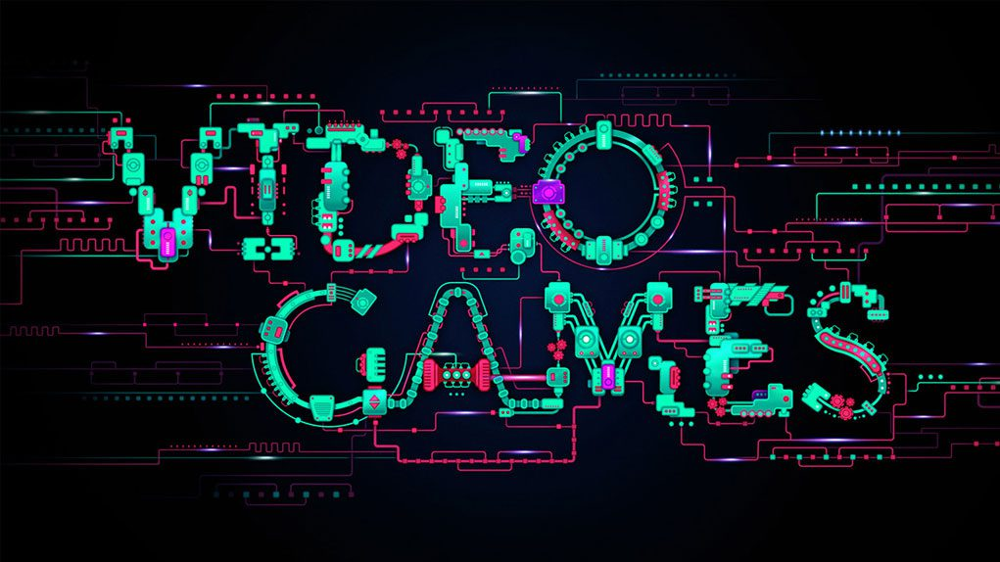

Crash Bandicoot es una serie de videojuegos de plataformas, originalmente exclusiva de PlayStation, publicada por Sony Computer Entertainment y creada por la compañía de videojuegos estadounidense Naughty Dog. La serie fue creada por Andy Gavin y Jason Rubin durante su permanencia en Naughty Dog, siendo un personaje principal concebido para ser mascota y representante de la marca PlayStation. Tiempo después, la licencia quedó en manos de Universal Interactive Studios y la serie pasó a múltiples plataformas, pasando también por varios desarrolladores, y abarcando otra clase de géneros. La serie cuenta con un total de dieciocho juegos y ha vendido más de 40 millones de copias en todo el mundo.
4.Prince Of Persia Trilogy
Prince of Persia (traducido como «Príncipe de Persia») es una serie de videojuegos de plataformas iniciada en 1989. Su éxito se debe a la notable fluidez de animación lograda en el protagonista, no vista hasta entonces. Su autor, Jordan Mechner, estudió durante varias horas filmaciones de su hermano corriendo y saltando con ropa blanca. Así se aseguró de que todos los movimientos resultasen realistas, en un proceso que se denomina rotoscopia. El juego tuvo varias secuelas en consolas de cuarta generación. En el 2003 la franquicia fue resucitada por la compañía Ubisoft, dando como resultado una nueva saga con un importante éxito de ventas y popularidad aún mayor a nivel mundial.
3.Spartan Total Warrior
Spartan: Total Warrior es un videojuego de acción épica en tercera persona para PlayStation 2, Xbox y GameCube Creado por la desarrolladora The Creative Assembly, se centra en batallas masivas, se remonta a los años 300 a.d. El personaje principal es espartano, a lo largo del juego se hace referencia a personajes importantes de la época como Arquímedes y Leónidas entre otros, el personaje es ayudado por los dioses y a lo largo del juego mejorará su equipamiento y habilidades como en un videojuego de rol; contiene toques épicos y se hace uso de la magia.
2.God Of War
God of War (literalmente en español Dios de la Guerra) es una serie de videojuegos en 3.ª persona creada por SCE Santa Monica Studio y distribuida por Sony Computer Entertainment. Se basa en las aventuras de un semidiós espartano, Kratos, quién se enfrenta a diversos personajes de la mitología griega, tanto héroes (Heracles, Teseo, Perseo, etc.) y especies mitológicas (tales como gorgonas, arpías, o minotauros) como dioses griegos (Ares, Poseidón, Zeus, entre otros), titanes (como Cronos) y dioses primordiales (como Gaia). Aunque el guerrero espartano acostumbra enemistad con la mayoría de los Dioses, recibe ayuda de muchos de ellos, en especial de Atenea.
1.Metal Gear Solid 3
Metal Gear (メタルギア Metaru Gia?) es una serie de videojuegos creada por Hideo Kojima, desarrollada y publicada por la compañía Konami, en la que el jugador toma el control de un soldado de élite, experto en tácticas de combate, supervivencia y sigilo, cuyo nombre de operaciones es Snake (en español: «Serpiente»). Dependiendo de qué juego de la saga se trate, este nombre de operativo está atribuido a diversos personajes relacionados entre sí por la trama de la serie.
Los Metal Gear son vehículos de combate con avanzada tecnología robótica y aspecto de tanque bípedo con la capacidad de lanzar armas nucleares desde cualquier tipo de terreno. Además, cuenta con armas menos poderosas pero más útiles en el campo de batalla como ametralladoras, cañones de riel, rayos láser, bombas y cohetes.

La destreza de muchos esta en un simple mando
Mensaje importante!
Pronto saldran nuevos y exclusivos juegos solo en nuestra pagina, esperalos!